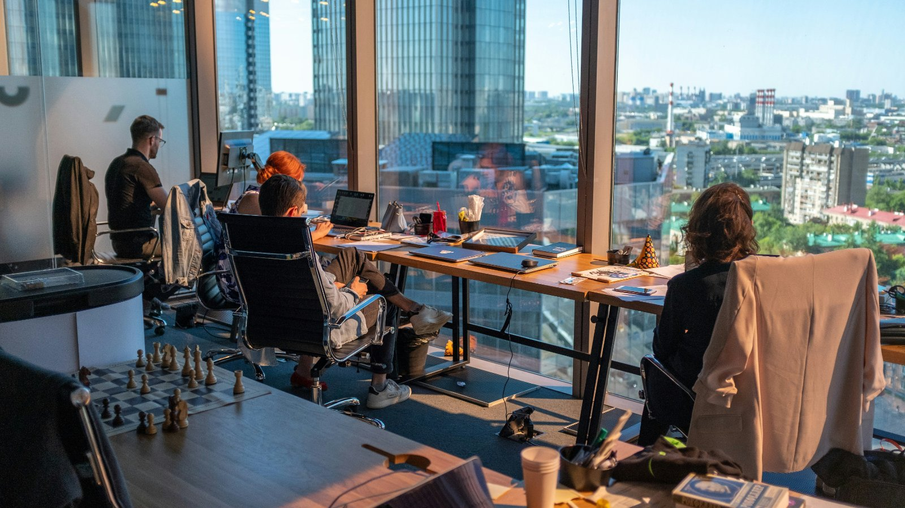

Escalation Policy Basics
Before you start, take a moment to read the instructions below to optimize your learning experience.
This course is fully responsive and compatible with multiple browsers; however, content is recommended to be viewed on a desktop device.
Scroll down to view the course content. Click the CONTINUE button to keep scrolling through a section.
Understanding the Learning Management System (LMS) and course navigation
PagerDuty University Courses are embedded into our Learning Management System.
The basic navigation is divided into two parts. This means that you will see two navigation menus while taking the course, one for the LMS and one for the course itself.
Toggling sidebar menus
Toggling the hamburger menu labelled Lessons within the course area will reveal the sidebar for all the topics within this lesson.
Escalation Policy Basics
Your schedules decide who is on call. Your escalation policies decide who gets notified, in what order, and what happens when nobody answers. A well-designed policy makes sure every incident reaches someone who can act, without disrupting anyone unnecessarily.
Objectives
By the end of this course, users will be able to:
This course builds on Shift-Based Schedules. The content of this module is mandatory, and will count toward the completion of this course.
Glossary & Key Terms
Below are the key terms covered in this course.
Policy Building Blocks
Click each heading
{{ t.def }}
Escalation Targets
Select a user as a target when you always want that specific person notified when an incident is triggered, assigned, or escalated to their level. User targets suit fixed roles, such as a team manager at the final level.
Select an on-call schedule as a target when you want to notify whoever is currently on call. Schedules are the usual choice for the first levels, so the policy follows your rotations without manual edits.
Select a team as a target when you want the incident to reach that team rather than a specific person or rotation.
Add more than one target to a level and PagerDuty notifies all of them at the same time. Use this when more than one person needs to be notified.
A typical three-level policy
Click a card to flip it.
Timeouts and Handoffs
The escalation timeout
The escalation timeout is how long a responder has to acknowledge, resolve, or reassign an incident before it moves to the next level. In the web app it appears as escalates after ___ min. The default is 30 minutes.
The timeout never delays the first notification. Whoever is at the first level is notified the moment an incident triggers.
Default escalation timeout
Minimum with one target on the level
Minimum with multiple targets on the level
The maximum escalation timeout. That's more than 4,000 years.
Repeat the policy
Select If no one acknowledges, repeat this policy to loop back to the first level when the last level times out. A policy can repeat up to nine times. After the final loop, the incident stays assigned to the last user.
On-call handoffs
At the end of a shift, the outgoing responder should hand off context to the incoming one. This can be in a team meeting, an email, a shared document, or a saved query that shows current and recent incidents and their status.
Useful items to include:
Recent deployments
On key systems, upstream dependencies and downstream consumers.
Queued remediation
Work requests created after a postmortem.
Open action items
Improvements to docs, context, or alerting for the next person on call.
Staff changes
Changes on other teams you regularly reach out to.
PagerDuty recommends making the second level of your escalation policy the person who was on call the prior week. They still have context from recent incidents.
On-call handoff notifications can remind users up to 48 hours before they go on call. Users configure them on their profile, and they must be a target on an escalation policy that is in use by a service, or set to send handoff notifications Always.
How Escalation Works
One incident, level by level
An escalation policy is an ordered set of levels, and each level has rules that set who is notified and how long they have to respond. When an incident triggers, PagerDuty works down these levels until someone acknowledges. Step through what happens. You can also use the arrow keys. The example policy beside each step highlights where the incident is.
Every service uses exactly one escalation policy:
A target can be a schedule, a user, or a team.
One escalation policy can be used by as many services as you like.
Common Anti-patterns
These are the setups that most often leave incidents unanswered or page the wrong people. Each card shows the problem and the fix.
Click a card to reveal the fix.
{{ a.title }}
{{ a.problem }}
{{ a.fix }}
Never hesitate to escalate
People miss pages. Phones fall in pools, the internet goes out, dinners happen. Escalation policies exist because no one is expected to answer every page, every time. Design for that, and encourage responders to bring in help early on high-severity incidents.
Build an Escalation Policy
These are the fields you fill out to create an escalation policy. Step through each field to see what it does. The explanation and controls appear under the highlighted field. You can also use the arrow keys to move between fields.
{{ bx.title }}
{{ bx.body }}
{{ bx.title }}
{{ bx.body }}
{{ bx.title }}
{{ bx.body }}
{{ bx.title }}
{{ bx.body }}
{{ bx.title }}
{{ bx.body }}
{{ bx.title }}
{{ bx.body }}
{{ bx.title }}
{{ bx.body }}
{{ bx.title }}
{{ bx.body }}
{{ bx.title }}
{{ bx.body }}
{{ bx.title }}
{{ bx.body }}
{{ bx.title }}
{{ bx.body }}
{{ bx.title }}
{{ bx.body }}

Knowledge Check
{{ q.text }}
In this module, we looked at how escalation policies route incidents to the right responders.
This included how levels and targets work, how to set timeouts and repeats, how to hand off on-call context, and which setups to avoid. Review your own policies against the anti-patterns in this course.
Read Escalation Policy Basics in the docs ↗Thank you for taking this course!
You have completed the Escalation Policy Design course.